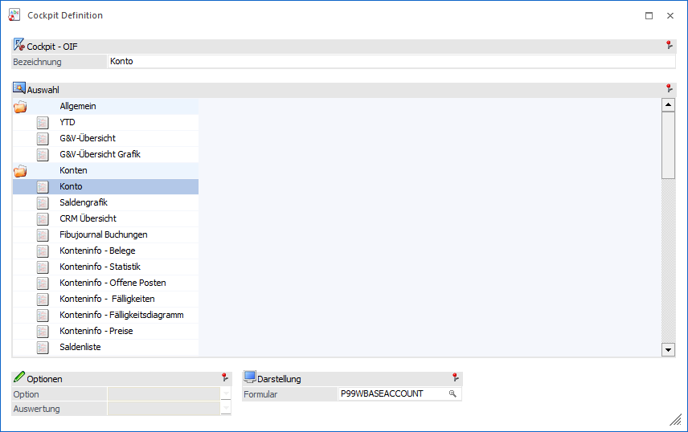

Das Element "OIF" (Objektorientiertes Info Formular) ermöglicht es allgemeine oder objektabhängige Information im Cockpit anzeigen zu lassen.
Hinweis
OIFs werden im Cockpit unter einer eigenen Überschrift angezeigt.

Die folgenden Einstellungen können vorgenommen werden:
Ø Bezeichnung
An dieser Stelle erfolgt die Eingabe der Bezeichnung, welche in weiterer Folge im Cockpit angezeigt werden soll.
Hinweis
Durch Auswahl einer Liste wird die Bezeichnung automatisch vorbelegt.
Ø OIF-Auswahl
Mit Hilfe der Tabelle erfolgt die OIF-Auswahl. Innerhalb der Tabelle werden folgende Bereiche angeboten:
ü Allgemein
Die OIFs dieses
Bereichs können in jedes Cockpit implementiert werden und weisen allgemeinen
Unternehmenszahlen aus.
ü Konten
Die OIFs dieses Bereichs
können nur in eine INFO-Cockpit für Konten implementiert werden und weisen
kontenbezogene Daten aus.
ü Artikel
Die OIFs dieses
Bereichs können nur in eine INFO-Cockpit für Artikel implementiert werden und
weisen artikelbezogene Daten aus.
ü Vertreter
Die OIFs dieses
Bereichs können nur in eine INFO-Cockpit für Vertreter implementiert werden und
weisen vertreterbezogene Daten aus.
ü Arbeitnehmer
Die OIFs dieses
Bereichs können nur in eine INFO-Cockpit für Arbeitnehmer implementiert werden
und weisen arbeitnehmerbezogene Daten aus.
ü Projekte
Die OIFs dieses
Bereichs können nur in eine INFO-Cockpit für Projekte implementiert werden und
weisen projektbezogene Daten aus.
Ø Option
In Abhängigkeit vom OIF-Typen kann an dieser Stelle definiert werden, ob der Bereich "0 - Verkauf" oder "1 - Einkauf" betrachtet werden soll.
Ø Auswertung
Abhängig vom gewählten OIF-Typ kann an dieser Stelle hinterlegt werden, wie die Darstellung erfolgen soll.
Ø Formular
In Abhängigkeit vom OIF-Typen kann an dieser Stelle das Formular für die Darstellung des OIFs definiert werden.